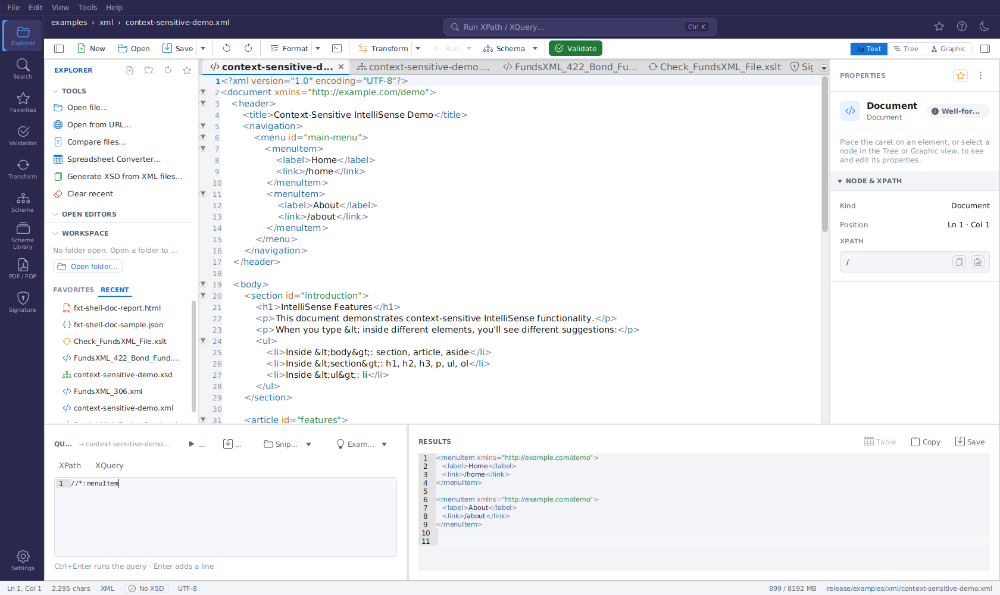
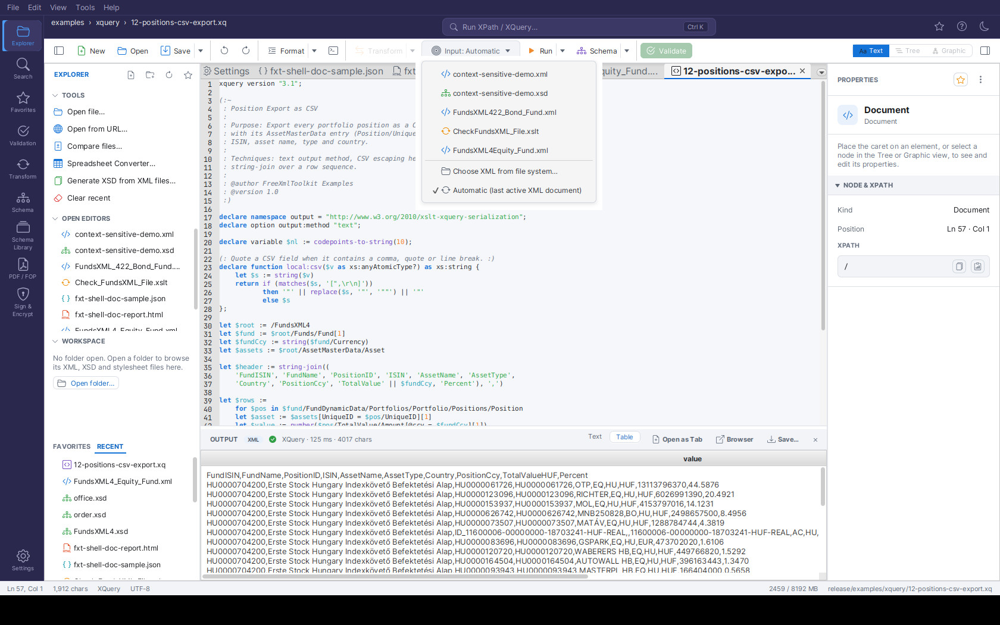

Query Console & Query Documents¶
XPath, XQuery and JSONPath queries run either in the Query Console at the bottom of the editor (Ctrl+K) or as query documents (.xq, .xpath) with an input selector.
Query Console¶
Run XPath, XQuery and JSONPath against the open document right from the editor. This is the one place for queries - the Transform panel links here with its Open Query Console button.
The Query Console is a panel that opens along the bottom of the editor. Toggle it with the terminal icon in the editor toolbar or with Ctrl+Shift+X; Ctrl+K (or a click on the header search pill) opens it and focuses the query input. It runs against whichever document is currently active, so it is the fastest way to probe an XML or JSON file while you work.

The Query Console with IntelliSense: typing/ in the XPath input opens the completion popup
(document elements and axes). The mode toggle and Run are on the left; on the right, the results
pane shows the previous run's XML result with syntax highlighting.
Layout¶
- Left - the query:
- An XPath / XQuery mode toggle. While a JSON document is active, the XPath toggle reads JSONPath.
- The query input with IntelliSense (autocomplete): suggestions pop up as you type after
/,//,@,[,(,$and::, or on demand with Ctrl+Space. It suggests element and attribute names from the active document, XPath/XQuery functions, axes, operators and (in XQuery mode) FLWOR keywords. Use ↑/↓ to navigate and Enter/Tab to accept. - The query is syntax-highlighted as you type: keywords, functions, axes, variables, strings, numbers and comments each get their own color.
- To run: press Ctrl+Enter in either mode (Enter inserts a new line, so queries can span several lines; a hint below the query says so). The Run button works in both modes.
- Run - Execute the query against the active document.
- Save - Save the current expression as a reusable snippet (see below).
- Snippets - A menu of your saved XPath and XQuery snippets; pick one to load it (the console switches to the matching mode automatically).
- Examples - Inserts a built-in XQuery example: Simple, FLWOR, HTML report or Data-quality check.
- Right - the results:
- A read-only, selectable results editor with line numbers showing the query result. XML results are syntax-highlighted (tags, attributes, values, comments), and JSON results (e.g. from JSONPath queries) get JSON highlighting; scalar results and messages stay plain.
- Copy - Copy the full result to the clipboard.
- Table - Shows the last XQuery result as a table in the OUTPUT panel (enabled after an XQuery run whose result can be shown as a table).
Like the text editor, every console area zooms with the mouse: hold Ctrl and scroll the mouse wheel over the query input or the results to change that area's font size (Ctrl+0 resets it).
Running a Query¶
- Open the console (Ctrl+K, the header search pill, the terminal icon, or Ctrl+Shift+X) - it opens focused on the query input.
- Choose XPath or XQuery with the mode toggle.
- Type your expression, then click Run (in XPath mode, Enter also runs).
- The result appears on the right. Use Copy to put it on the clipboard.
The console always runs against the active document. For an XML document it evaluates the expression directly; for a JSON document the toggle reads JSONPath and the input is evaluated as a JSONPath expression. When no document is open, Run is disabled and the results pane shows "No document open."
The map:, array: and math: function namespaces are
pre-declared in the console, so XPath 3.1 expressions using map:merge(),
array:size(), math:pow() etc. run directly - no namespace prolog needed.
Note
The Query Console is an additional, faster access point - it does not replace the Transform activity. For XSLT transformations, parameters, recent-stylesheet history, watch-and-rerun, and the OUTPUT panel's result table and HTML preview, use the Transform Panel.
Saving and Loading Snippets¶
Reusable XPath and XQuery expressions are saved as snippets:
- Save - Prompts for a name and stores the current expression. XPath snippets are saved as
.xpathfiles and XQuery snippets as.xqueryfiles. - Snippets - Lists every saved snippet, prefixed with its kind (XPath / XQuery). Selecting one loads it into the console and switches to the matching mode.
Snippets are kept in the shared query folder.
Saved snippets can be managed directly from the menu. Each snippet's submenu offers, next to Load into console and Open in editor:
- Overwrite with current query - Replaces the saved expression with the console's current
input of the snippet's kind (an
.xpathsnippet always takes the XPath input, an.xquerysnippet the XQuery input), after a confirmation. - Rename… - Prompts for a new name (pre-filled with the current one). Names already in use are refused.
- Delete… - Deletes the snippet file, after a confirmation.
The entries in the FUNDSXML section (see below) are read-only - they are re-registered from the FundsXML content cache on every start and therefore offer no management actions.
Looking for ready-made queries? The installation's examples/xpath/ folder contains
32 XPath 3.1 examples and examples/xquery/ contains 17 XQuery 3.1 scripts
(data-quality checks plus a reporting series producing CSV, ASCII tables/charts,
Markdown and JSON), all written for the FundsXML4 sample files in examples/xml/.
Paste them into the console, or copy the .xpath files into your query folder to have
them appear in the Snippets menu. See the README.md in each folder for details.
When the optional FundsXML extension is enabled, the Snippets menu also shows a FUNDSXML section with the XPath/XQuery example queries shipped with the FundsXML examples (for example fund-summary, top-holdings, look-through, aggregate-by-assettype). Selecting one loads it into the console and switches the XPath/XQuery mode to match. These entries come from the FundsXML content cache and are re-registered automatically on every start.
XPath / XQuery Autocomplete¶
The XPath/XQuery inputs of the Query Console offer context-aware
autocomplete in both the XPath and
XQuery input fields. Suggestions appear automatically after trigger characters (/, [, @, (,
$, ::) or on demand with Ctrl+Space. Depending on context it suggests element names, attribute
names, XPath axes, functions, and (in XQuery) variables. Navigate with the arrow keys and press
Enter or Tab to insert; Escape dismisses the popup. Functions and axes are inserted with
their parentheses / :: automatically.
Saving, Loading and Examples¶
Saved queries are the Query Console's Snippets menu, and its Examples menu inserts the built-in XQuery examples - see Saving and Loading Snippets.
Query Documents & the Input Selector¶
XPath and XQuery files are first-class editor documents: open a
.xqor.xpathfile (or any file fromexamples/xpath/andexamples/xquery/), press Run Query, and read the result in the OUTPUT panel - no console or panel switching required.

An XQuery document fromexamples/xquery/ with the Input dropdown open: pick an
open XML-family document, a file from disk, or Automatic (the most recently active XML
document, here checked). Below, the OUTPUT panel shows the query's CSV result.
Query documents¶
.xq, .xquery, .xqm, .xqy (XQuery) and .xpath (XPath) files open in a dedicated
query editor with XPath/XQuery syntax highlighting and the same context-aware
autocomplete as the Query Console. They appear in the
Explorer workspace tree, the file choosers and drag & drop like every other supported
type.
Running¶
- Run Query (the toolbar's Run button, or
Ctrl+Enter) runs the active XPath/XQuery document. The Run ▾ arrow menu lists all three run actions explicitly. - Run Transform does the same for an active XSLT stylesheet - output format
auto-detected from its
xsl:outputdeclaration. - Run Pipeline covers XProc documents (see XProc Pipelines).
Results appear in the OUTPUT panel docked below the editor, with execution time and result size in the status line. A tabular XQuery result (a sequence of similar elements) additionally offers a Table view; HTML results get a preview, and everything can be opened as an editor tab, opened in the browser, or saved from the panel's header buttons.
The Input dropdown¶
The query, stylesheet or pipeline runs against an XML input document. The Input dropdown in the editor toolbar (its label reads "Input: …" followed by the chosen document) (shown only for query/XSLT/XProc documents) controls which one:
- Automatic (last active XML document) - the default: the most recently active XML-family document (XML, XSD, XSLT, Schematron, XProc). The active document itself is never chosen - an XSLT stylesheet does not transform itself.
- An open document - pick any other open XML-family tab. The run uses the tab's live editor text, including unsaved changes.
- Choose XML from file system… - pick a file without opening it; it is read fresh on every run.
The choice is remembered per document for the session. If a chosen target tab is closed, the run falls back to Automatic. With no XML-family document available at all, Run Query/Run Transform show a short guard message instead of failing.
Tip
Ready-made queries ship in examples/xpath/ (32 expressions) and examples/xquery/
(17 scripts) - open any of them and press Ctrl+Enter against a FundsXML sample from
examples/xml/. See Bundled Example Collections.